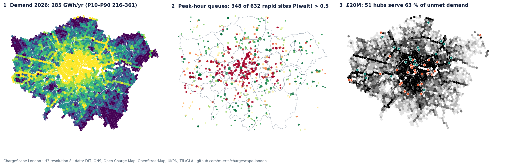

285 GWhpublic charging demand 2026, P50 (P10–P90 216–361)
348 / 632rapid sites where a driver more likely than not waits at the peak hour
51 hubsserve 63 % of unmet rapid demand for £20M
-0.25R² when a utilisation model meets an unseen city (random CV: 0.70)
Interactive maps
- Who has chargers, who has EVs — 13k charging sites by power over EV ownership and housing
- Public charging demand — P10 / P50 / P90 and 2030, 3-D hexes
- Rapid network: access, load and queues
- Where the next hubs go — budgets £5–40M, P50 vs robust
Notebooks
- Supply audit — who has chargers, who has EVs, Moran's I and Gi* hot spots, drive-time gaps
- Demand surface — structural Monte Carlo demand with P10/P50/P90, calibration, 2030
- Choice & queues — logit station choice, Erlang-C queues, new vs cannibalised demand
- Siting — capacitated and robust MILP, budget sweep, sensitivity
- Transfer test — does a context model explain observed usage in an unseen city?
Documentation
Methodology · Architecture & stack · Model card · Data catalog (32 datasets) · Roadmap